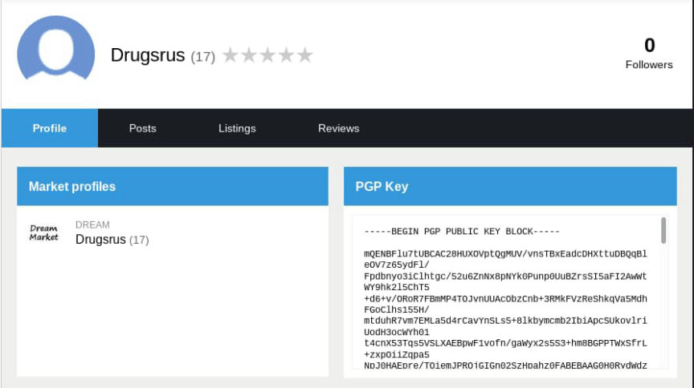
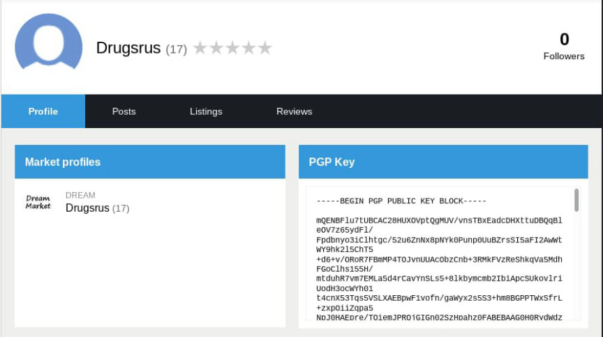

California Meth Vendor to Be Sentenced Today
~6 min read | Published on 2022-05-10, tagged Darkweb-Vendor, Sentenced using 1286 words.
A darkweb vendor who ran his operation from behind bars is scheduled to be sentenced today.
Michael Goldberg, 36, of Los Angeles, California, faces sentencing today for selling methamphetamine on the darkweb. Court documents do not officially identify the defendant’s vendor username. However, an excerpt from a recorded phone call between Goldberg and one of his co-conspirators possibly identifies the username as “Drugs R Us.”
The case, which is detailed in a lengthy criminal complaint, involves three indicted co-conspirators and several unindicted co-conspirators. Donnica Rabulan, 31, Goldberg’s wife, and James Caleb Kueker, 41, were also charged for their roles in the drug trafficking operation.
In 2018, a shipping company identified seven suspicious packages headed to the Philippines. Federal law enforcement officers found nearly 21 kilograms of methamphetamine inside the packages. While the names on the packages were fake, Goldberg was the registered subscriber of the phone numbers associated with six of the packages.
A Homeland Security Investigations special agent, in the criminal complaint, wrote:
On May 30, 2018, I interviewed employees at the UPS Store. Based on California Driver License (“CDL”) photographs of GOLDBERG and RABULAN, employees identified GOLDBERG as a longtime customer and the renter of Box 710 at the UPS Store and RABULAN as the person they knew as “Danica Santiago,” the listed shipper of parcel #4. According to a UPS Store employee, on May 21, 2018, RABULAN and her friend entered the UPS Store together and mailed parcels 1 through 4. RABULAN mailed parcel #3 under the consignor name MGA Productions and parcel #4 under the consignor name Danica Santiago. RABULAN’s friend, mailed parcels 1 and 2 under the consignor name “Tracy Shapoff.”
Investigators noticed a common theme with some of the packages shipped by the defendants:
“On June 11, 2018 CBP officers at the IMF targeted and inspected another USPS parcel, bearing the tracking number EZ010910686US, from consignor “Jeff Stevens” at 2700 E. Cahuenga Boulevard, Los Angeles, CA 90068 shipped to Australia and discovered approximately 72.6 grams of methamphetamine (the “AUSTRALIA PARCEL”).”
“Jeff Stevens” also shipped three other parcels internationally around the same time as the NEW ZEALAND PARCEL and the AUSTRALIA PARCEL. CBP seized two of the parcels, which contained a total of 176.1 grams of methamphetamine…"
“On June 7, 2018, CBP Officer Lionel Andrade notified me of the POLAND PARCEL that was in transit to consignee Patryk Breczko in Piensk, Poland. The consignor of the POLAND PARCEL was “Jeff Stevens” at 18618 Clark Street, Tarzana, California.”
Investigators identified 59 packages shipped by the defendants based on a variation of the consignor’s name and the consignor’s address. The defendants had shipped the packages to the Philippines, Australia, New Zealand, the United Kingdom, Italy, Poland, and France, among other places. Law enforcement officers seized 14 of the 59 packages. The seized packages contained a total of approximately 22.3 kilograms of methamphetamine and 170 grams of marijuana.
Someone living at Rabulan’s address tracked some of the packages. Goldberg lived at the same address until June 2018. On June 6, 2018, Goldberg surrendered to law enforcement for an outstanding warrant for mail theft and fraud. A judge sentenced Goldberg to 42 months in prison.
Law enforcement officers learned that Goldberg was still running the operation while in a federal detention center.
At the detention center, inmates are allotted 300 minutes to talk on the phone every month. Goldberg used all 300 of his allotted minutes and regularly used the accounts of 16 fellow inmates. While using his own line, Goldberg would tell his co-conspirators that he could not speak freely. However, he had much less of a filter when using accounts owned by other inmates.
People in the outside world have to register their phone numbers with the Bureau of Prisons before an inmate can call them. As a result, officials can quickly determine when inmates place phone calls through a different inmate’s account.
“On June 14, 2018, at approximately 6:42 a.m., GOLDBERG made an MDC phone call from his own account to RABULAN. GOLDBERG and RABULAN discuss the inability to talk freely because he is on his MDC phone account. GOLDBERG states, “Hey can you answer the other phone number today? The 310 number because I’m not going to call you on this number today… Baby, answer the other phone; I can’t be talking to you like this for reals.”
“Several hours later, at approximately 10:05 a.m., GOLDBERG made an MDC phone call using inmate Joseph Hill’s phone account to RABULAN. The conversation begins with RABULAN, GOLDBERG, and an individual only known as “Echo” on a three-way phone call. GOLDBERG stated that RABULAN will “handle it today or tomorrow,” which I believe, based on the context of the exchange, is referring to the shipment of drugs and money transfers. After Echo hangs up, GOLDBERG and RABULAN continue their conversation about money an individual named “Rain” owes them. GOLDBERG states, “Make sure you get 25% before you do anything. The rest of them make sure, especially Rain. I want 25 grand of the money he owes me.” Based on the context of the conversation and my investigation of the case, I believe the “25 grand” refers to the proceeds from drug sales.”
“On June 6, 2018, at approximately 9:20 a.m., GOLDBERG made an MDC phone call to RABULAN and RABULAN’s older sister, Donna Mae Rabulan. In the conversation, the parties discuss getting access to the dark web, destroying evidence, and the status of drug shipments. GOLDBERG instructs RABULAN, “Tell your sister to clean out the shredder.” RABULAN relays the message to her sister and asks, “I don’t know the login for the other thing, the darkweb.” GOLDBERG begins to respond, “It’s `Drugs R Us”’ but is promptly interrupted by RABULAN and Donna Mae Rabulan from saying anything further over the phone.”

“On June 20, 2018, in an MDC phone call between KUEKER and GOLDBERG, they discussed ordering and selling drugs. GOLDBERG says, “You guys should really look into reordering, dawg.” KUEKER replies, “Yeah, Yeah. I just want to make sure that there’s not too much in stock, you know.” GOLDBERG also tells KUEKER that his life story would be more interesting than the drug traffickers in “Cocaine Cowboy,” a documentary that features several Miami cocaine traffickers during the 1970s and 1980s. GOLDBERG states, “I was reading this book about this Cocaine Cowboy, and I was like this fool is fucking weak. I really want to do a movie and book when I get out. I think I’ll make enough money for everybody to get out of the game.” KUEKER responds, “I saw this from the very beginning. Man, damn, this would be a great fucking documentary.” GOLDBERG says, “And this will be in the book too, about you calling me in the feds.”
In the criminal complaint, which I have attached to this article, there are many examples of the incriminating phone calls Goldberg made while in custody. The investigating HSI special agent wrote that they had listened to “over a hundred” phone calls.
In at least two phone calls, Goldberg tells Kueker to buy products from a Dream vendor identified as “Don Cimura.” Later, Goldberg told Kueker to contact the vendor over Wickr because “it’s the safest way.”
A review of records from Coinbase revealed that Goldberg had deposited more than $200,000 from Coinbase into his bank account.
Rabulan and Goldberg pleaded guilty to a drug conspiracy charge. A judge sentenced Rabulan to 92 months in prison. Kueker is awaiting sentencing. Goldberg’s sentencing hearing is scheduled to take place on May 10, 2022.
Update May 11, 2022: Sentencing postponed for undisclosed reasons. No new sentencing date provided.
complaint pdf
Michael Goldberg, 36, of Los Angeles, California, faces sentencing today for selling methamphetamine on the darkweb. Court documents do not officially identify the defendant’s vendor username. However, an excerpt from a recorded phone call between Goldberg and one of his co-conspirators possibly identifies the username as “Drugs R Us.”
Goldberg may have operated the “Drugs R Us” account on Dream and other markets.
The case, which is detailed in a lengthy criminal complaint, involves three indicted co-conspirators and several unindicted co-conspirators. Donnica Rabulan, 31, Goldberg’s wife, and James Caleb Kueker, 41, were also charged for their roles in the drug trafficking operation.
In 2018, a shipping company identified seven suspicious packages headed to the Philippines. Federal law enforcement officers found nearly 21 kilograms of methamphetamine inside the packages. While the names on the packages were fake, Goldberg was the registered subscriber of the phone numbers associated with six of the packages.
The classic “accidentally use your real phone number” mistake.
A Homeland Security Investigations special agent, in the criminal complaint, wrote:
On May 30, 2018, I interviewed employees at the UPS Store. Based on California Driver License (“CDL”) photographs of GOLDBERG and RABULAN, employees identified GOLDBERG as a longtime customer and the renter of Box 710 at the UPS Store and RABULAN as the person they knew as “Danica Santiago,” the listed shipper of parcel #4. According to a UPS Store employee, on May 21, 2018, RABULAN and her friend entered the UPS Store together and mailed parcels 1 through 4. RABULAN mailed parcel #3 under the consignor name MGA Productions and parcel #4 under the consignor name Danica Santiago. RABULAN’s friend, mailed parcels 1 and 2 under the consignor name “Tracy Shapoff.”
Investigators noticed a common theme with some of the packages shipped by the defendants:
“On June 11, 2018 CBP officers at the IMF targeted and inspected another USPS parcel, bearing the tracking number EZ010910686US, from consignor “Jeff Stevens” at 2700 E. Cahuenga Boulevard, Los Angeles, CA 90068 shipped to Australia and discovered approximately 72.6 grams of methamphetamine (the “AUSTRALIA PARCEL”).”
“Jeff Stevens” also shipped three other parcels internationally around the same time as the NEW ZEALAND PARCEL and the AUSTRALIA PARCEL. CBP seized two of the parcels, which contained a total of 176.1 grams of methamphetamine…"
“On June 7, 2018, CBP Officer Lionel Andrade notified me of the POLAND PARCEL that was in transit to consignee Patryk Breczko in Piensk, Poland. The consignor of the POLAND PARCEL was “Jeff Stevens” at 18618 Clark Street, Tarzana, California.”
Investigators identified 59 packages shipped by the defendants based on a variation of the consignor’s name and the consignor’s address. The defendants had shipped the packages to the Philippines, Australia, New Zealand, the United Kingdom, Italy, Poland, and France, among other places. Law enforcement officers seized 14 of the 59 packages. The seized packages contained a total of approximately 22.3 kilograms of methamphetamine and 170 grams of marijuana.
Someone living at Rabulan’s address tracked some of the packages. Goldberg lived at the same address until June 2018. On June 6, 2018, Goldberg surrendered to law enforcement for an outstanding warrant for mail theft and fraud. A judge sentenced Goldberg to 42 months in prison.
Law enforcement officers learned that Goldberg was still running the operation while in a federal detention center.
At the detention center, inmates are allotted 300 minutes to talk on the phone every month. Goldberg used all 300 of his allotted minutes and regularly used the accounts of 16 fellow inmates. While using his own line, Goldberg would tell his co-conspirators that he could not speak freely. However, he had much less of a filter when using accounts owned by other inmates.
People in the outside world have to register their phone numbers with the Bureau of Prisons before an inmate can call them. As a result, officials can quickly determine when inmates place phone calls through a different inmate’s account.
“On June 14, 2018, at approximately 6:42 a.m., GOLDBERG made an MDC phone call from his own account to RABULAN. GOLDBERG and RABULAN discuss the inability to talk freely because he is on his MDC phone account. GOLDBERG states, “Hey can you answer the other phone number today? The 310 number because I’m not going to call you on this number today… Baby, answer the other phone; I can’t be talking to you like this for reals.”
“Several hours later, at approximately 10:05 a.m., GOLDBERG made an MDC phone call using inmate Joseph Hill’s phone account to RABULAN. The conversation begins with RABULAN, GOLDBERG, and an individual only known as “Echo” on a three-way phone call. GOLDBERG stated that RABULAN will “handle it today or tomorrow,” which I believe, based on the context of the exchange, is referring to the shipment of drugs and money transfers. After Echo hangs up, GOLDBERG and RABULAN continue their conversation about money an individual named “Rain” owes them. GOLDBERG states, “Make sure you get 25% before you do anything. The rest of them make sure, especially Rain. I want 25 grand of the money he owes me.” Based on the context of the conversation and my investigation of the case, I believe the “25 grand” refers to the proceeds from drug sales.”
“On June 6, 2018, at approximately 9:20 a.m., GOLDBERG made an MDC phone call to RABULAN and RABULAN’s older sister, Donna Mae Rabulan. In the conversation, the parties discuss getting access to the dark web, destroying evidence, and the status of drug shipments. GOLDBERG instructs RABULAN, “Tell your sister to clean out the shredder.” RABULAN relays the message to her sister and asks, “I don’t know the login for the other thing, the darkweb.” GOLDBERG begins to respond, “It’s `Drugs R Us”’ but is promptly interrupted by RABULAN and Donna Mae Rabulan from saying anything further over the phone.”

One of the many profiles for “Drugs R Us” on Recon.
“On June 20, 2018, in an MDC phone call between KUEKER and GOLDBERG, they discussed ordering and selling drugs. GOLDBERG says, “You guys should really look into reordering, dawg.” KUEKER replies, “Yeah, Yeah. I just want to make sure that there’s not too much in stock, you know.” GOLDBERG also tells KUEKER that his life story would be more interesting than the drug traffickers in “Cocaine Cowboy,” a documentary that features several Miami cocaine traffickers during the 1970s and 1980s. GOLDBERG states, “I was reading this book about this Cocaine Cowboy, and I was like this fool is fucking weak. I really want to do a movie and book when I get out. I think I’ll make enough money for everybody to get out of the game.” KUEKER responds, “I saw this from the very beginning. Man, damn, this would be a great fucking documentary.” GOLDBERG says, “And this will be in the book too, about you calling me in the feds.”
In the criminal complaint, which I have attached to this article, there are many examples of the incriminating phone calls Goldberg made while in custody. The investigating HSI special agent wrote that they had listened to “over a hundred” phone calls.
In at least two phone calls, Goldberg tells Kueker to buy products from a Dream vendor identified as “Don Cimura.” Later, Goldberg told Kueker to contact the vendor over Wickr because “it’s the safest way.”
Wells Fargo provided investigators with Goldberg's account balances.
A review of records from Coinbase revealed that Goldberg had deposited more than $200,000 from Coinbase into his bank account.
Rabulan and Goldberg pleaded guilty to a drug conspiracy charge. A judge sentenced Rabulan to 92 months in prison. Kueker is awaiting sentencing. Goldberg’s sentencing hearing is scheduled to take place on May 10, 2022.
Update May 11, 2022: Sentencing postponed for undisclosed reasons. No new sentencing date provided.
complaint pdf